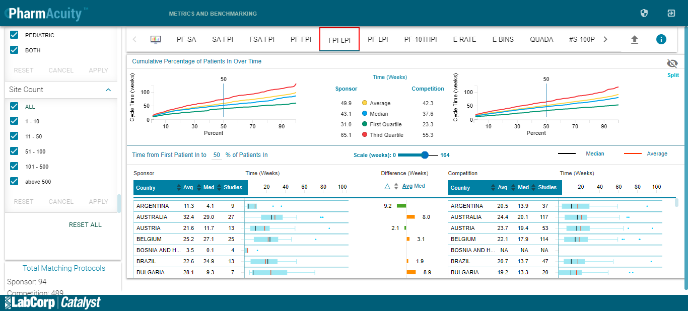
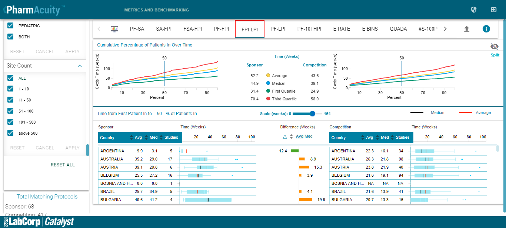

M&B FPI-LPI Page - 2350.974sTests: 6Skipped: 0Failures: 6 should be matched Studies Box Plots value of Sponsor with the database value for the given filter options - 555.459sFor the country ARGENTINA studies are not matched with the database: Actual-9 =/= Expected-8✗For the country AUSTRALIA studies are not matched with the database: Actual-27 =/= Expected-23✗For the country AUSTRIA studies are not matched with the database: Actual-13 =/= Expected-9✗For the country BELGIUM studies are not matched with the database: Actual-25 =/= Expected-22✗For the country BOSNIA AND H... studies are not matched with the database: Actual-4 =/= Expected-2✗For the country BRAZIL studies are not matched with the database: Actual-13 =/= Expected-10✗For the country BULGARIA studies are not matched with the database: Actual-7 =/= Expected-5✗For the country CANADA studies are not matched with the database: Actual-31 =/= Expected-29✗For the country CHILE studies are not matched with the database: Actual-8 =/= Expected-4✗For the country CHINA studies are not matched with the database: Actual-8 =/= Expected-6✗For the country COLOMBIA studies are not matched with the database: Actual-2 =/= Expected-5✗For the country COSTA RICA studies are not matched with the database: Actual-1 =/= Expected-0✗For the country CROATIA studies are not matched with the database: Actual-2 =/= Expected-4✗For the country CZECH REPUBL... studies are not matched with the database: Actual-14 =/= Expected-15✗For the country DENMARK studies are not matched with the database: Actual-5 =/= Expected-8✗For the country EL SALVADOR studies are not matched with the database: Actual-1 =/= Expected-2✗For the country FINLAND studies are not matched with the database: Actual-7 =/= Expected-4✗For the country FRANCE studies are not matched with the database: Actual-50 =/= Expected-47✗For the country GERMANY studies are not matched with the database: Actual-41 =/= Expected-40✗For the country GREECE studies are not matched with the database: Actual-8 =/= Expected-3✗For the country GUATEMALA studies are not matched with the database: Actual-3 =/= Expected-4✗For the country HONG KONG studies are not matched with the database: Actual-7 =/= Expected-6✗For the country HUNGARY studies are not matched with the database: Actual-15 =/= Expected-13✗For the country ISRAEL studies are not matched with the database: Actual-10 =/= Expected-9✗For the country ITALY studies are not matched with the database: Actual-46 =/= Expected-40✗For the country JAPAN studies are not matched with the database: Actual-11 =/= Expected-3✗For the country LATVIA studies are not matched with the database: Actual-6 =/= Expected-4✗For the country LITHUANIA studies are not matched with the database: Actual-2 =/= Expected-0✗For the country MACEDONIA [F... studies are not matched with the database: Actual-1 =/= Expected-2✗For the country MALAYSIA studies are not matched with the database: Actual-4 =/= Expected-5✗For the country MEXICO studies are not matched with the database: Actual-12 =/= Expected-9✗For the country NETHERLANDS studies are not matched with the database: Actual-22 =/= Expected-18✗For the country NEW ZEALAND studies are not matched with the database: Actual-4 =/= Expected-6✗For the country NORWAY studies are not matched with the database: Actual-7 =/= Expected-3✗For the country PANAMA studies are not matched with the database: Actual-4 =/= Expected-5✗For the country PERU studies are not matched with the database: Actual-6 =/= Expected-7✗For the country PHILIPPINES studies are not matched with the database: Actual-1 =/= Expected-3✗For the country POLAND studies are not matched with the database: Actual-25 =/= Expected-19✗For the country PORTUGAL studies are not matched with the database: Actual-10 =/= Expected-8✗For the country PUERTO RICO studies are not matched with the database: Actual-NA =/= Expected-1✗For the country REUNION studies are not matched with the database: Actual-4 =/= Expected-0✗For the country ROMANIA studies are not matched with the database: Actual-10 =/= Expected-8✗For the country RUSSIA studies are not matched with the database: Actual-21 =/= Expected-15✗For the country SERBIA studies are not matched with the database: Actual-7 =/= Expected-4✗For the country SINGAPORE studies are not matched with the database: Actual-9 =/= Expected-5✗For the country SLOVAKIA studies are not matched with the database: Actual-3 =/= Expected-4✗For the country SLOVENIA studies are not matched with the database: Actual-3 =/= Expected-1✗For the country SOUTH AFRICA studies are not matched with the database: Actual-1 =/= Expected-3✗For the country SOUTH KOREA studies are not matched with the database: Actual-26 =/= Expected-22✗For the country SPAIN studies are not matched with the database: Actual-47 =/= Expected-45✗For the country SWITZERLAND studies are not matched with the database: Actual-15 =/= Expected-10✗For the country TAIWAN studies are not matched with the database: Actual-16 =/= Expected-12✗For the country THAILAND studies are not matched with the database: Actual-12 =/= Expected-10✗For the country TURKEY studies are not matched with the database: Actual-12 =/= Expected-10✗For the country UKRAINE studies are not matched with the database: Actual-8 =/= Expected-3✗For the country UNITED KINGD... studies are not matched with the database: Actual-39 =/= Expected-32✗For the country UNITED STATE... studies are not matched with the database: Actual-76 =/= Expected-68✗Passed.✓Passed.✓Passed.✓Passed.✓Passed.✓Passed.✓Passed.✓Passed.✓Tests passed: 12.31%should be matched Average Box Plots value of Sponsor with the database value for the given filter options - 345.99sFor the country ARGENTINA averages are not matched with the database: Actual-11.3 =/= Expected-9.9✗For the country AUSTRALIA averages are not matched with the database: Actual-32.4 =/= Expected-32.7✗For the country AUSTRIA averages are not matched with the database: Actual-21.6 =/= Expected-39.1✗For the country BELGIUM averages are not matched with the database: Actual-25.2 =/= Expected-26.2✗For the country BOSNIA AND H... averages are not matched with the database: Actual-3.5 =/= Expected-0✗For the country BRAZIL averages are not matched with the database: Actual-22.6 =/= Expected-25.7✗For the country BULGARIA averages are not matched with the database: Actual-28.1 =/= Expected-40.6✗For the country CANADA averages are not matched with the database: Actual-27.2 =/= Expected-27.8✗For the country CHILE averages are not matched with the database: Actual-16.4 =/= Expected-5.5✗For the country CHINA averages are not matched with the database: Actual-21.5 =/= Expected-19.5✗For the country COLOMBIA averages are not matched with the database: Actual-4.1 =/= Expected-8.3✗For the country COSTA RICA averages are not matched with the database: Actual-19.9 =/= Expected-null✗For the country CZECH REPUBL... averages are not matched with the database: Actual-22.4 =/= Expected-22.9✗For the country DENMARK averages are not matched with the database: Actual-20.6 =/= Expected-13.2✗For the country ESTONIA averages are not matched with the database: Actual-2.6 =/= Expected-5.1✗For the country FINLAND averages are not matched with the database: Actual-9.8 =/= Expected-6✗For the country FRANCE averages are not matched with the database: Actual-25.4 =/= Expected-26.1✗For the country GEORGIA averages are not matched with the database: Actual-6.4 =/= Expected-null✗For the country GERMANY averages are not matched with the database: Actual-19.4 =/= Expected-17.1✗For the country GREECE averages are not matched with the database: Actual-20.3 =/= Expected-23.9✗For the country GUATEMALA averages are not matched with the database: Actual-3.2 =/= Expected-1✗For the country HONG KONG averages are not matched with the database: Actual-3.3 =/= Expected-6.6✗For the country HUNGARY averages are not matched with the database: Actual-20.8 =/= Expected-19✗For the country IRELAND averages are not matched with the database: Actual-27.1 =/= Expected-4.1✗For the country ISRAEL averages are not matched with the database: Actual-19.9 =/= Expected-20.9✗For the country ITALY averages are not matched with the database: Actual-32.0 =/= Expected-35.2✗For the country JAPAN averages are not matched with the database: Actual-30.2 =/= Expected-22.5✗For the country LATVIA averages are not matched with the database: Actual-16.2 =/= Expected-19.6✗For the country LITHUANIA averages are not matched with the database: Actual-12.1 =/= Expected-null✗For the country MALAYSIA averages are not matched with the database: Actual-9.0 =/= Expected-6.4✗For the country MEXICO averages are not matched with the database: Actual-17.0 =/= Expected-17.7✗For the country NETHERLANDS averages are not matched with the database: Actual-29.5 =/= Expected-36.4✗For the country NEW ZEALAND averages are not matched with the database: Actual-11.9 =/= Expected-9.4✗For the country NORWAY averages are not matched with the database: Actual-13.8 =/= Expected-18.8✗For the country PANAMA averages are not matched with the database: Actual-2.1 =/= Expected-0✗For the country PERU averages are not matched with the database: Actual-20.0 =/= Expected-26✗For the country POLAND averages are not matched with the database: Actual-18.6 =/= Expected-18.9✗For the country PORTUGAL averages are not matched with the database: Actual-25.9 =/= Expected-31.1✗For the country REUNION averages are not matched with the database: Actual-7.9 =/= Expected-null✗For the country ROMANIA averages are not matched with the database: Actual-21.1 =/= Expected-19.2✗For the country RUSSIA averages are not matched with the database: Actual-25.0 =/= Expected-26.5✗For the country SERBIA averages are not matched with the database: Actual-11.8 =/= Expected-4.9✗For the country SINGAPORE averages are not matched with the database: Actual-16.0 =/= Expected-15.5✗For the country SLOVAKIA averages are not matched with the database: Actual-19.6 =/= Expected-9✗For the country SLOVENIA averages are not matched with the database: Actual-3.9 =/= Expected-null✗For the country SOUTH KOREA averages are not matched with the database: Actual-17.8 =/= Expected-20.5✗For the country SPAIN averages are not matched with the database: Actual-25.2 =/= Expected-25.8✗For the country SWEDEN averages are not matched with the database: Actual-19.3 =/= Expected-36.6✗For the country SWITZERLAND averages are not matched with the database: Actual-13.0 =/= Expected-11.8✗For the country TAIWAN averages are not matched with the database: Actual-20.6 =/= Expected-25.6✗For the country THAILAND averages are not matched with the database: Actual-17.9 =/= Expected-23.5✗For the country TURKEY averages are not matched with the database: Actual-21.7 =/= Expected-28.5✗For the country UKRAINE averages are not matched with the database: Actual-19.6 =/= Expected-17.2✗For the country UNITED KINGD... averages are not matched with the database: Actual-18.1 =/= Expected-16.4✗Passed.✓Passed.✓Passed.✓Passed.✓Passed.✓Passed.✓Passed.✓Passed.✓Passed.✓Passed.✓Tests passed: 15.63%should be matched Median Box Plots value of Sponsor with the database value for the given filter options - 344.694sFor the country ARGENTINA medians are not matched with the database: Actual-4.1 =/= Expected-3.1✗For the country UNITED STATE... averages are not matched with the database: Actual-46.1 =/= Expected-50.8✗For the country AUSTRALIA medians are not matched with the database: Actual-29.0 =/= Expected-28.3✗For the country AUSTRIA medians are not matched with the database: Actual-11.7 =/= Expected-29.8✗For the country BELGIUM medians are not matched with the database: Actual-27.1 =/= Expected-27.3✗For the country BOSNIA AND H... medians are not matched with the database: Actual-0.1 =/= Expected-0✗For the country BRAZIL medians are not matched with the database: Actual-24.9 =/= Expected-34.9✗For the country BULGARIA medians are not matched with the database: Actual-9.3 =/= Expected-41.2✗For the country CANADA medians are not matched with the database: Actual-20.3 =/= Expected-19.7✗For the country CHILE medians are not matched with the database: Actual-14.4 =/= Expected-6✗For the country CHINA medians are not matched with the database: Actual-23.4 =/= Expected-16.6✗For the country COLOMBIA medians are not matched with the database: Actual-4.1 =/= Expected-8.3✗For the country COSTA RICA medians are not matched with the database: Actual-19.9 =/= Expected-null✗For the country CZECH REPUBL... medians are not matched with the database: Actual-19.6 =/= Expected-17.9✗For the country DENMARK medians are not matched with the database: Actual-18.7 =/= Expected-13.2✗For the country ESTONIA medians are not matched with the database: Actual-2.6 =/= Expected-5.1✗For the country FINLAND medians are not matched with the database: Actual-2.4 =/= Expected-0✗For the country FRANCE medians are not matched with the database: Actual-22.8 =/= Expected-24✗For the country GEORGIA medians are not matched with the database: Actual-6.4 =/= Expected-null✗For the country GERMANY medians are not matched with the database: Actual-15.0 =/= Expected-11.1✗For the country GREECE medians are not matched with the database: Actual-8.9 =/= Expected-23.9✗For the country GUATEMALA medians are not matched with the database: Actual-3.0 =/= Expected-1✗For the country HONG KONG medians are not matched with the database: Actual-1.4 =/= Expected-7✗For the country HUNGARY medians are not matched with the database: Actual-15.1 =/= Expected-12.9✗For the country IRELAND medians are not matched with the database: Actual-7.3 =/= Expected-4.1✗For the country ISRAEL medians are not matched with the database: Actual-19.0 =/= Expected-22✗For the country ITALY medians are not matched with the database: Actual-23.7 =/= Expected-24.3✗For the country JAPAN medians are not matched with the database: Actual-24.1 =/= Expected-22.5✗For the country LATVIA medians are not matched with the database: Actual-20.3 =/= Expected-22.1✗For the country LITHUANIA medians are not matched with the database: Actual-12.1 =/= Expected-null✗For the country MALAYSIA medians are not matched with the database: Actual-8.4 =/= Expected-0✗For the country MEXICO medians are not matched with the database: Actual-15.1 =/= Expected-14.1✗For the country NETHERLANDS medians are not matched with the database: Actual-17.0 =/= Expected-18.4✗For the country NEW ZEALAND medians are not matched with the database: Actual-13.7 =/= Expected-8.1✗For the country NORWAY medians are not matched with the database: Actual-11.3 =/= Expected-22.4✗For the country PERU medians are not matched with the database: Actual-19.4 =/= Expected-30.2✗For the country PORTUGAL medians are not matched with the database: Actual-25.9 =/= Expected-34.4✗For the country REUNION medians are not matched with the database: Actual-4.4 =/= Expected-null✗For the country ROMANIA medians are not matched with the database: Actual-15.6 =/= Expected-18.4✗For the country RUSSIA medians are not matched with the database: Actual-24.1 =/= Expected-25.9✗For the country SERBIA medians are not matched with the database: Actual-7.7 =/= Expected-4.9✗For the country SLOVAKIA medians are not matched with the database: Actual-22.4 =/= Expected-9✗For the country SLOVENIA medians are not matched with the database: Actual-4.4 =/= Expected-null✗For the country SOUTH KOREA medians are not matched with the database: Actual-15.8 =/= Expected-19.6✗For the country SPAIN medians are not matched with the database: Actual-23.0 =/= Expected-25✗For the country SWEDEN medians are not matched with the database: Actual-5.1 =/= Expected-44.4✗For the country SWITZERLAND medians are not matched with the database: Actual-11.1 =/= Expected-6.7✗For the country TAIWAN medians are not matched with the database: Actual-20.0 =/= Expected-20.1✗For the country THAILAND medians are not matched with the database: Actual-13.9 =/= Expected-16.6✗For the country TURKEY medians are not matched with the database: Actual-19.8 =/= Expected-21.6✗For the country UKRAINE medians are not matched with the database: Actual-16.4 =/= Expected-18.9✗For the country UNITED KINGD... medians are not matched with the database: Actual-12.9 =/= Expected-14✗Passed.✓Passed.✓Passed.✓Passed.✓Passed.✓Passed.✓Passed.✓Passed.✓Passed.✓Passed.✓Passed.✓Passed.✓Passed.✓Tests passed: 20.00%should be matched Studies Box Plots value of Competition with the database value for the given filter options - 446.627sFor the country UNITED STATE... medians are not matched with the database: Actual-37.4 =/= Expected-43.9✗For the country AUSTRALIA studies are not matched with the database: Actual-98 =/= Expected-104✗For the country AUSTRIA studies are not matched with the database: Actual-40 =/= Expected-42✗For the country BELGIUM studies are not matched with the database: Actual-94 =/= Expected-98✗For the country BULGARIA studies are not matched with the database: Actual-16 =/= Expected-17✗For the country CANADA studies are not matched with the database: Actual-115 =/= Expected-118✗For the country CROATIA studies are not matched with the database: Actual-6 =/= Expected-7✗For the country CZECH REPUBL... studies are not matched with the database: Actual-50 =/= Expected-52✗For the country DENMARK studies are not matched with the database: Actual-28 =/= Expected-29✗For the country FRANCE studies are not matched with the database: Actual-143 =/= Expected-147✗For the country GERMANY studies are not matched with the database: Actual-123 =/= Expected-124✗For the country HONG KONG studies are not matched with the database: Actual-26 =/= Expected-27✗For the country HUNGARY studies are not matched with the database: Actual-52 =/= Expected-54✗For the country ISRAEL studies are not matched with the database: Actual-48 =/= Expected-50✗For the country ITALY studies are not matched with the database: Actual-127 =/= Expected-132✗For the country JAPAN studies are not matched with the database: Actual-74 =/= Expected-75✗For the country NETHERLANDS studies are not matched with the database: Actual-63 =/= Expected-64✗For the country NEW ZEALAND studies are not matched with the database: Actual-18 =/= Expected-20✗For the country POLAND studies are not matched with the database: Actual-72 =/= Expected-74✗For the country RUSSIA studies are not matched with the database: Actual-69 =/= Expected-70✗For the country SINGAPORE studies are not matched with the database: Actual-22 =/= Expected-24✗For the country SLOVAKIA studies are not matched with the database: Actual-20 =/= Expected-21✗For the country SOUTH KOREA studies are not matched with the database: Actual-99 =/= Expected-103✗For the country SPAIN studies are not matched with the database: Actual-152 =/= Expected-156✗For the country SWEDEN studies are not matched with the database: Actual-42 =/= Expected-43✗For the country TAIWAN studies are not matched with the database: Actual-60 =/= Expected-62✗For the country UKRAINE studies are not matched with the database: Actual-31 =/= Expected-32✗For the country UNITED STATE... studies are not matched with the database: Actual-297 =/= Expected-301✗Passed.✓Passed.✓Passed.✓Passed.✓Passed.✓Passed.✓Passed.✓Passed.✓Passed.✓Passed.✓Passed.✓Passed.✓Passed.✓Passed.✓Passed.✓Passed.✓Passed.✓Passed.✓Passed.✓Passed.✓Passed.✓Passed.✓Passed.✓Passed.✓Passed.✓Passed.✓Passed.✓Passed.✓Passed.✓Passed.✓Passed.✓Passed.✓Passed.✓Passed.✓Passed.✓Tests passed: 55.56%should be matched Average Box Plots value of Competition with the database value for the given filter options - 329.476sFor the country AUSTRALIA averages are not matched with the database: Actual-26.3 =/= Expected-26✗For the country AUSTRIA averages are not matched with the database: Actual-23.8 =/= Expected-22.8✗For the country BELGIUM averages are not matched with the database: Actual-21.6 =/= Expected-21.4✗For the country BULGARIA averages are not matched with the database: Actual-20.7 =/= Expected-20.2✗For the country CANADA averages are not matched with the database: Actual-26.4 =/= Expected-26✗For the country CROATIA averages are not matched with the database: Actual-6.2 =/= Expected-5.6✗For the country CZECH REPUBL... averages are not matched with the database: Actual-24.7 =/= Expected-24.1✗For the country DENMARK averages are not matched with the database: Actual-30.8 =/= Expected-29.8✗For the country FRANCE averages are not matched with the database: Actual-24.3 =/= Expected-24.4✗For the country GERMANY averages are not matched with the database: Actual-22.9 =/= Expected-22.6✗For the country HONG KONG averages are not matched with the database: Actual-21.1 =/= Expected-20.3✗For the country HUNGARY averages are not matched with the database: Actual-27.6 =/= Expected-27✗For the country ISRAEL averages are not matched with the database: Actual-28.8 =/= Expected-28✗For the country ITALY averages are not matched with the database: Actual-25.0 =/= Expected-24.8✗For the country JAPAN averages are not matched with the database: Actual-34.8 =/= Expected-35.2✗For the country NETHERLANDS averages are not matched with the database: Actual-20.0 =/= Expected-19.8✗For the country NEW ZEALAND averages are not matched with the database: Actual-17.8 =/= Expected-16.7✗For the country POLAND averages are not matched with the database: Actual-28.5 =/= Expected-28.4✗For the country RUSSIA averages are not matched with the database: Actual-28.7 =/= Expected-28.4✗For the country SINGAPORE averages are not matched with the database: Actual-17.6 =/= Expected-17✗For the country SLOVAKIA averages are not matched with the database: Actual-22.3 =/= Expected-21.2✗For the country SPAIN averages are not matched with the database: Actual-27.9 =/= Expected-27.5✗For the country SWEDEN averages are not matched with the database: Actual-19.6 =/= Expected-19.5✗For the country TAIWAN averages are not matched with the database: Actual-19.8 =/= Expected-19.5✗For the country UKRAINE averages are not matched with the database: Actual-29.2 =/= Expected-28.6✗For the country UNITED KINGD... averages are not matched with the database: Actual-23.5 =/= Expected-23.3✗Passed.✓Passed.✓Passed.✓Passed.✓Passed.✓Passed.✓Passed.✓Passed.✓Passed.✓Passed.✓Passed.✓Passed.✓Passed.✓Passed.✓Passed.✓Passed.✓Passed.✓Passed.✓Passed.✓Passed.✓Passed.✓Passed.✓Passed.✓Passed.✓Passed.✓Passed.✓Passed.✓Passed.✓Passed.✓Passed.✓Passed.✓Passed.✓Passed.✓Passed.✓Passed.✓Passed.✓Tests passed: 58.06%should be matched Median Box Plots value of Competition with the database value for the given filter options - 328.721sFor the country AUSTRIA medians are not matched with the database: Actual-21.9 =/= Expected-20.7✗For the country BELGIUM medians are not matched with the database: Actual-19.1 =/= Expected-18.4✗For the country BULGARIA medians are not matched with the database: Actual-13.3 =/= Expected-10.9✗For the country CANADA medians are not matched with the database: Actual-20.3 =/= Expected-20.2✗For the country CROATIA medians are not matched with the database: Actual-3.0 =/= Expected-1.9✗For the country CZECH REPUBL... medians are not matched with the database: Actual-20.6 =/= Expected-20.4✗For the country DENMARK medians are not matched with the database: Actual-21.9 =/= Expected-20.7✗For the country GERMANY medians are not matched with the database: Actual-19.0 =/= Expected-18.9✗For the country HONG KONG medians are not matched with the database: Actual-11.8 =/= Expected-11.6✗For the country HUNGARY medians are not matched with the database: Actual-23.1 =/= Expected-21.9✗For the country ISRAEL medians are not matched with the database: Actual-25.2 =/= Expected-23.7✗For the country ITALY medians are not matched with the database: Actual-18.7 =/= Expected-18.5✗For the country NETHERLANDS medians are not matched with the database: Actual-16.3 =/= Expected-15.6✗For the country RUSSIA medians are not matched with the database: Actual-20.3 =/= Expected-20.1✗For the country SINGAPORE medians are not matched with the database: Actual-18.0 =/= Expected-16.1✗For the country SLOVAKIA medians are not matched with the database: Actual-20.5 =/= Expected-19.9✗For the country SPAIN medians are not matched with the database: Actual-25.4 =/= Expected-24.8✗For the country UKRAINE medians are not matched with the database: Actual-24.0 =/= Expected-23.4✗For the country UNITED KINGD... medians are not matched with the database: Actual-19.1 =/= Expected-18.9✗Passed.✓Passed.✓Passed.✓Passed.✓Passed.✓Passed.✓Passed.✓Passed.✓Passed.✓Passed.✓Passed.✓Passed.✓Passed.✓Passed.✓Passed.✓Passed.✓Passed.✓Passed.✓Passed.✓Passed.✓Passed.✓Passed.✓Passed.✓Passed.✓Passed.✓Passed.✓Passed.✓Passed.✓Passed.✓Passed.✓Passed.✓Passed.✓Passed.✓Passed.✓Passed.✓Passed.✓Passed.✓Passed.✓Passed.✓Passed.✓Passed.✓Passed.✓Passed.✓Tests passed: 69.35%


{kind=link}
{kind=link}